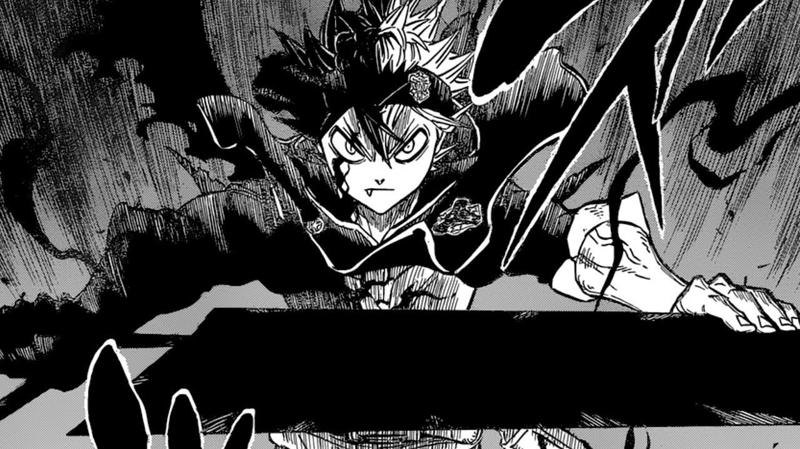

Boku no hero
"Boku no Hero Academia", también conocido como "My Hero Academia", es un manga escrito e ilustrado por Kohei Horikoshi. La historia se desarrolla en un mundo donde la mayoría de la población ha desarrollado superpoderes conocidos como "Quirks". El protagonista, Izuku Midoriya, es uno de los pocos que nació sin un Quirk, pero sueña con convertirse en un héroe.leer...
Chainsawn Man
Es un manga escrito e ilustrado por Tatsuki Fujimoto. La historia se desarrolla en un mundo donde los demonios existen y representan una amenaza constante para la humanidad. El protagonista, Denji, es un joven cazador de demonios endeudado y atormentado por una vida de pobreza y dificultades.leer...
JIbaku Shounen Hanako-kun
Es un manga escrito e ilustrado por AidaIro. La historia se centra en una escuela secundaria donde existe una leyenda urbana sobre un fantasma llamado Hanako-san, que habita en el tercer baño de chicas del antiguo edificio de la escuela.La protagonista de la historia es Yashiro Nene, una joven estudiante que es algo supersticiosa. Ella se encuentra con Hanako-san y descubre que no es un fantasma malicioso, sino un chico con apariencia de niño que lleva el nombre de Hanako-kun.leer...
Naruto
"Naruto" es un manga escrito e ilustrado por Masashi Kishimoto. La historia se desarrolla en un mundo ninja y sigue la vida de Naruto Uzumaki, un joven ninja rebelde y enérgico que busca convertirse en el Hokage, el líder y protector de su aldea, la Aldea Oculta de la Hoja.
El manga comienza con Naruto como un niño marginado y solitario. Se revela que dentro de él está sellado el poderoso Zorro de Nueve Colas, un monstruo que atacó su aldea cuando era un bebé. Debido a esto, Naruto ha enfrentado el rechazo de los habitantes de la aldea a lo largo de su vida.Leer...

One Piece
"One Piece" es un manga escrito e ilustrado por Eiichiro Oda. La historia sigue las aventuras de Monkey D. Luffy y su tripulación pirata, mientras buscan el tesoro más grande del mundo conocido como "One Piece" y persiguen el sueño de Luffy de convertirse en el Rey de los Piratas.leer...
SPY X FAMILY
"Spy X Family" es un manga escrito e ilustrado por Tatsuya Endo. La historia se centra en un espía llamado Twilight, cuyo nombre real es Loid Forger, y su misión de infiltrarse en un país hostil. Sin embargo, para cumplir su objetivo, debe formar una familia falsa.Así es como entra en escena Yor Briar, una asesina conocida como "Thorn Princess", y Anya, una niña con habilidades telepáticas.leer...

Black Clover
"Black Clover" es un manga escrito e ilustrado por Yūki Tabata. La historia se desarrolla en un mundo de magia y sigue la vida de Asta y Yuno, dos huérfanos que fueron abandonados en una iglesia cuando eran bebés. Ambos tienen un sueño: convertirse en el Rey Mago, el máximo líder de los magos en el Reino de Clover.
Asta es un joven sin habilidad mágica en un mundo donde la magia es común. Sin embargo, compensa su falta de magia con su increíble fuerza física y determinación inquebrantable. Por otro lado, Yuno es un prodigio mágico con habilidades excepcionales y grandes ambiciones.leer...
Junji Ito Collection
"Junji Ito Collection" es una recopilación de historias de terror creadas por el mangaka japonés Junji Ito. Este manga presenta una variedad de relatos macabros y perturbadores que han ganado reconocimiento por su estilo único y escalofriante.
El manga abarca diversas historias independientes, cada una con su propio argumento y ambientación. Estas historias exploran temas como el miedo, la obsesión, la transformación y la locura, presentando personajes que se enfrentan a situaciones aterradoras y sobrenaturales.leer...
Kimetsu no Yaiba
"Kimetsu no Yaiba" es un manga escrito e ilustrado por Koyoharu Gotouge. La historia se desarrolla en el Japón de la era Taisho y sigue la vida de Tanjiro Kamado, un joven bondadoso y valiente que se convierte en un cazador de demonios después de que su familia es brutalmente asesinada y su hermana Nezuko es convertida en un demonio.
Tanjiro se une a la organización de cazadores de demonios conocida como el Cuerpo de Cazadores de Demonios para vengar a su familia y encontrar una cura para revertir la transformación de su hermana.leer...
Neon Genesis Evangelion
"Evangelion", también conocido como "Neon Genesis Evangelion", es un manga creado por Yoshiyuki Sadamoto.La historia se sitúa en un mundo postapocalíptico en el que la humanidad se encuentra al borde de la extinción debido a la llegada de seres gigantes llamados Ángeles. Para defenderse, la organización paramilitar NERV ha desarrollado unos gigantes biomecánicos llamados Unidades Evangelion. Estas unidades son pilotadas por adolescentes seleccionados, conocidos como "niños elegidos", que poseen una conexión especial con los Evangelion.
leer...
Shingeki no Kyojin
"Shingeki no Kyojin", también conocido como "Attack on Titan", es un manga creado por Hajime Isayama. La historia se desarrolla en un mundo donde la humanidad está al borde de la extinción debido a la aparición de gigantes humanoides llamados Titanes que devoran a los seres humanos sin motivo aparente.
El manga sigue la vida de Eren Yeager, un joven que vive en las murallas que protegen a los últimos vestigios de la humanidad.leer...
Tenkuu Shinpan
"Tenkuu Shinpan", también conocido como "High-Rise Invasion", es un manga escrito por Tsuina Miura e ilustrado por Takahiro Oba. La historia sigue a la protagonista, Yuri Honjo, quien de repente se encuentra en un extraño mundo urbano lleno de rascacielos interconectados y habitado por asesinos enmascarados.
Yuri descubre que está atrapada en este mundo llamado "High-Rise", donde su única opción para sobrevivir es enfrentarse a los asesinos y encontrar una forma de escapar.leer...
{kind=link}
{kind=link}
{kind=link}
{kind=link}
{kind=link}
{kind=link}
{kind=link}
{kind=link}
{kind=link}
{kind=link}
{kind=link}